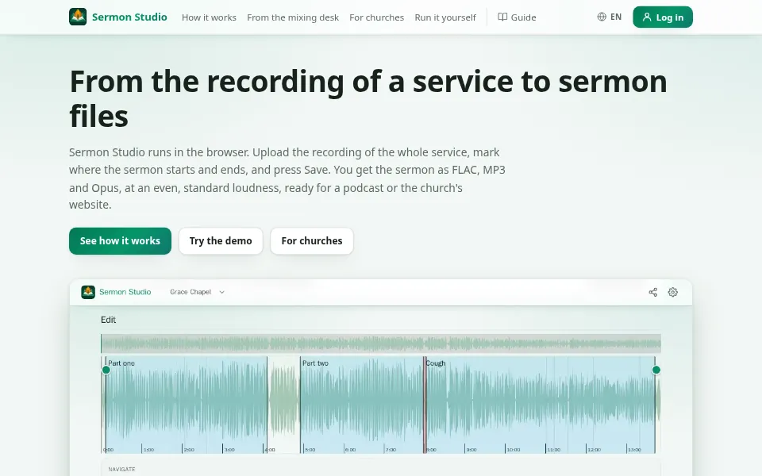
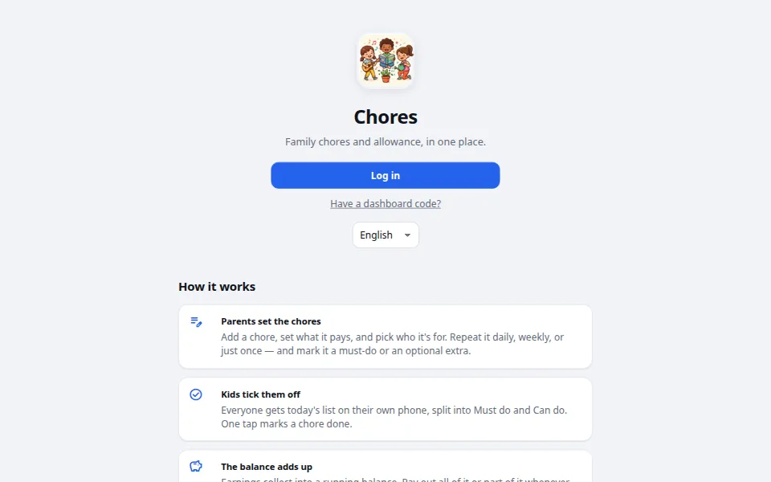
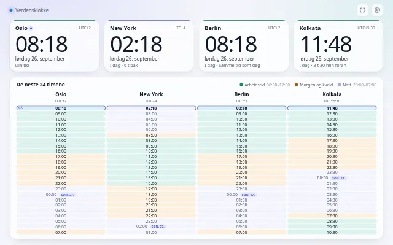
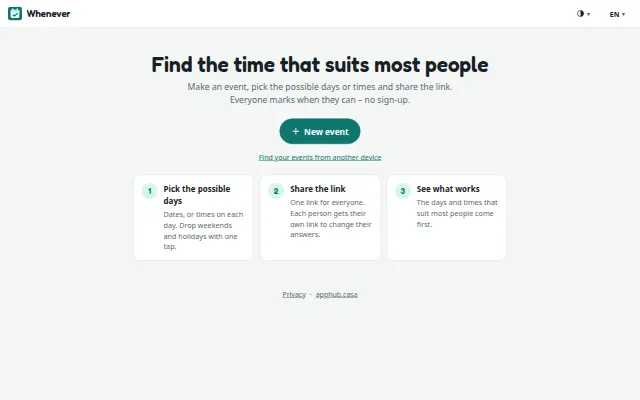
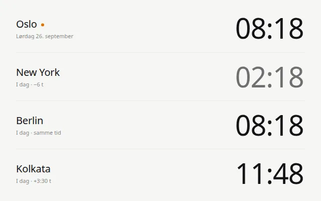
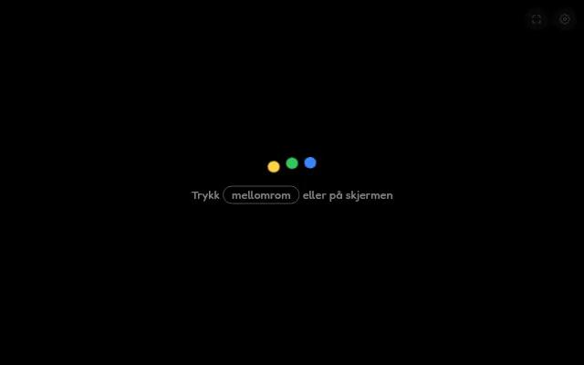
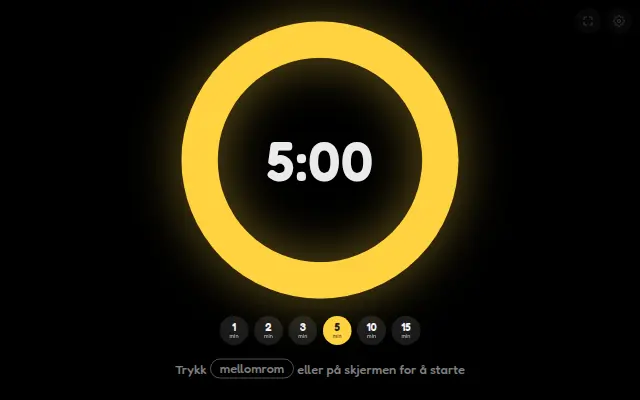
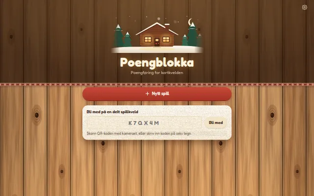
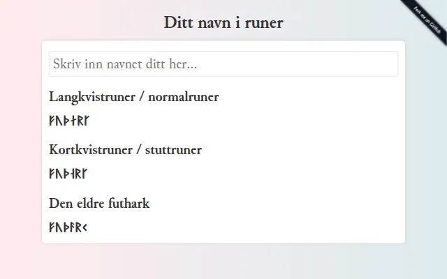

apphub.casa
Small apps for family, church and office.
-

Sermon StudioFrom the recording of a service to sermon files, ready for a podcast or the church's website
- Mark the sermon on a waveform and press Save
- Evenly loud FLAC, MP3 and Opus
- Hosted for churches by invite, or run it yourself
-

ChoresFamily chores and allowance, in one place
- Chores with pay, split into must do and can do
- A wall screen for the kitchen, and a running balance
- Works with Home Assistant and a Kindle on the wall
Everyday
-

ClockWorld clock with a 24-hour planner, made for wall screens
-

WheneverFind the day or time that suits most people, with one link to share
-

TimeMinimal world clock
time.apphub.casaNorskEnglish source
Fun & games
-

Random color screen for kids' games
color.apphub.casaNorskEnglish source -

Full-screen countdown timer for kids
countdown.apphub.casaNorskEnglish source -

PoengblokkaScore keeping for card games, shared at the table with a QR code
-

RunenavnYour name written in runes
About
These are free apps I made because I found them useful myself. If they're useful to you too, please use them. Use the versions hosted here, or fork any of them and run your own copy. No ads, no tracking.
They're hobby projects, so no guarantees.
Questions, bugs or ideas? Write to mail@apphub.casa, or open an issue on the app's GitHub.